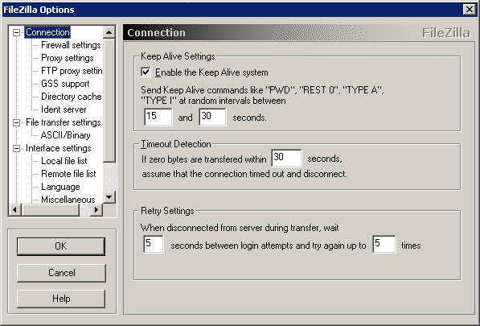

Connection
Overview:
The connection page and its subpages control the way in which FileZilla connects to FTP servers.

Keep Alive Settings:
Most FTP connections time out if you have been idle for too long. FileZilla can be configured to send Keep Alive commands such as "PWD", "REST 0", "TYPE A", or "TYPE I" to simulate activity and prevent the FTP server from logging you out. To use the Keep Alive System, check the "Enable the Keep Alive System" checkbox. You can also configure the frequency of Keep Alive commands by entering the time interval at which FileZilla will send Keep Alive commands. Please note that enabling this setting does not prevent servers that use no-transfer timeouts from logging you out if you are idle for too long.
Timeout Detection:
After FileZilla sends a command, if the FTP server does not respond, or starts a response but doesn't finish it, then FileZilla assumes the connection has timed out, and disconnects. Here, you can enter the amount of time in seconds that FileZilla should wait before disconnecting. If you have a very slow connection to a server and it always times out, try using a greater value.
Retry Settings:
If the connection is closed while a transfer is in progress, then FileZilla can be configured to reconnect and attempt the transfer again. Here, you can configure how long FileZilla should wait before reconnecting, and the maximum number of times it should try to reconnect.
Additional Settings
The connection page has several subpages where you can configure other aspects of the connection: